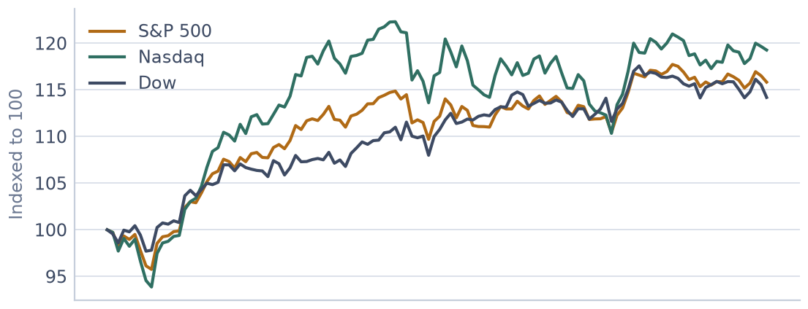
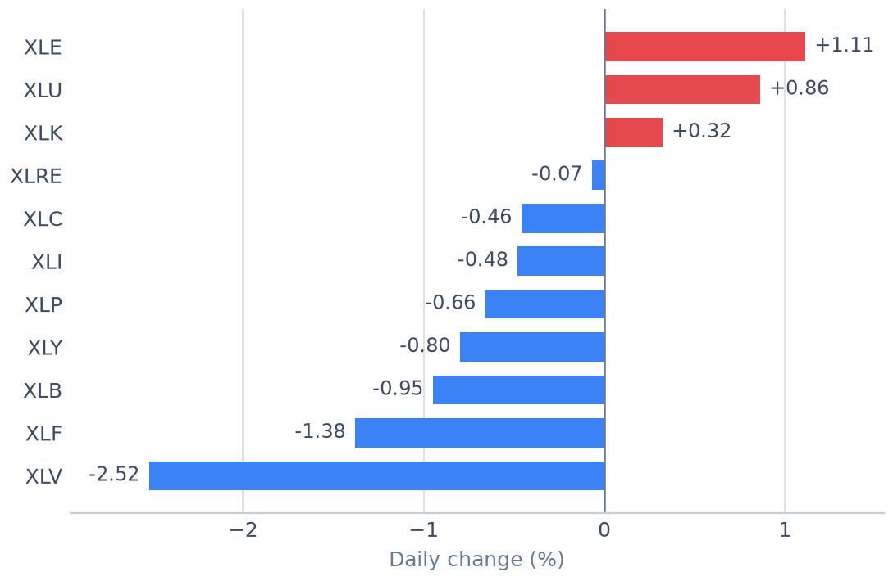

<meta charset="utf-8">
<title>2026-09-08 미국증시 마감 시황 — 다우존스 -1.18%, 강세·약세 섹터 정리 — 야간비행 일지</title>
<meta name="description" content="2026-09-08 미국증시 마감. S&P 500 -0.58%, 나스닥 종합 -0.32%, 다우존스 -1.18%. 강세 에너지 +1.11%, 약세 헬스케어 -2.52%. 11개 업종 등락률과 섹터 로테이션, 국내 증시 관전 포인트까지 정리했습니다.">
<meta name="viewport" content="width=device-width, initial-scale=1">
<link rel="canonical" href="https://danielmoon82.github.io/moon/posts/us-market-2026-09-08.html">
<meta property="og:type" content="article">
<meta property="og:title" content="2026-09-08 미국증시 마감 시황 — 다우존스 -1.18%, 강세·약세 섹터 정리">
<meta property="og:description" content="2026-09-08 미국증시 마감. S&P 500 -0.58%, 나스닥 종합 -0.32%, 다우존스 -1.18%. 강세 에너지 +1.11%, 약세 헬스케어 -2.52%. 11개 업종 등락률과 섹터 로테이션, 국내 증시 관전 포인트까지 정리했습니다.">
<meta property="og:url" content="https://danielmoon82.github.io/moon/posts/us-market-2026-09-08.html">
<meta property="og:image" content="https://danielmoon82.github.io/moon/data/us/sectors.png">
<meta name="twitter:card" content="summary_large_image">
<link rel="preconnect" href="https://fonts.googleapis.com">
<link rel="preconnect" href="https://fonts.gstatic.com" crossorigin>
<link rel="stylesheet" href="https://fonts.googleapis.com/css2?family=Hahmlet:wght@400;600;800&family=IBM+Plex+Mono:wght@400;500&family=IBM+Plex+Sans+KR:wght@300;400;500;600&display=swap">
<script type="application/ld+json">
{
  "@context": "https://schema.org",
  "@type": "NewsArticle",
  "headline": "2026-09-08 미국증시 마감 시황 — 다우존스 -1.18%, 강세·약세 섹터 정리",
  "description": "2026-09-08 미국증시 마감. S&P 500 -0.58%, 나스닥 종합 -0.32%, 다우존스 -1.18%. 강세 에너지 +1.11%, 약세 헬스케어 -2.52%. 11개 업종 등락률과 섹터 로테이션, 국내 증시 관전 포인트까지 정리했습니다.",
  "datePublished": "2026-09-08T23:46:13.754245+00:00",
  "author": {
    "@type": "Person",
    "name": "야간비행 일지"
  },
  "publisher": {
    "@type": "Organization",
    "name": "야간비행 일지"
  },
  "mainEntityOfPage": "https://danielmoon82.github.io/moon/posts/us-market-2026-09-08.html",
  "image": "https://danielmoon82.github.io/moon/data/us/sectors.png",
  "keywords": "미국증시, 미국주식, 마감시황, 해외주식, S&P500, 나스닥, 다우존스, 섹터분석, 섹터로테이션, 증시전망, 주식공부, 미국장마감"
}
</script>

<style>
  :root{
    --paper:#E7EBF1;--surface:#F4F6FA;--surface-2:#DCE2EC;
    --ink:#0F1729;--ink-2:#3D4A63;--ink-3:#6B7891;
    --line:#C6CEDB;--line-soft:#D6DCE6;--accent:#B06A15;--accent-bright:#C2761A;
    --up:#E5484D;--down:#3B82F6;
    --f-display:"Hahmlet",'Nanum Myeongjo',"Apple SD Gothic Neo",serif;
    --f-body:"IBM Plex Sans KR","Apple SD Gothic Neo","Malgun Gothic",sans-serif;
    --f-mono:"IBM Plex Mono","SFMono-Regular",Consolas,monospace;
    --pad:clamp(20px,5vw,64px);
  }
  @media (prefers-color-scheme:dark){
    :root:not([data-theme="light"]){
      --paper:#0B1120;--surface:#121A2C;--surface-2:#1A2439;
      --ink:#E9EEF7;--ink-2:#A9B5C9;--ink-3:#72809A;
      --line:#26314A;--line-soft:#1D2739;--accent:#E8A33D;--accent-bright:#F0B45C;
    }
  }
  /* 글자 기준 크기. 홈과 같은 값. */
  html{font-size:18px;}
  *{box-sizing:border-box;}
  body{margin:0;background:var(--paper);color:var(--ink);font-family:var(--f-body);
    font-weight:300;font-size:1rem;line-height:1.75;-webkit-font-smoothing:antialiased;}
  a{color:inherit;}
  img{max-width:100%;height:auto;}
  .wrap{max-width:760px;margin:0 auto;padding-inline:var(--pad);}
  .nav{position:sticky;top:0;z-index:20;background:color-mix(in srgb,var(--paper) 88%,transparent);
    backdrop-filter:saturate(180%) blur(12px);border-bottom:1px solid var(--line);}
  .nav-in{display:flex;align-items:center;justify-content:space-between;height:58px;}
  .brand{font-family:var(--f-display);font-weight:600;font-size:1rem;letter-spacing:-.02em;text-decoration:none;}
  .back{font-family:var(--f-mono);font-size:.72rem;color:var(--ink-3);text-decoration:none;}
  .article{padding-block:clamp(40px,7vw,72px) clamp(56px,9vw,96px);}
  .eyebrow{font-family:var(--f-mono);font-size:.68rem;letter-spacing:.16em;text-transform:uppercase;
    color:var(--accent);margin:0 0 14px;}
  h1{font-family:var(--f-display);font-weight:800;font-size:clamp(1.6rem,4.4vw,2.3rem);
    line-height:1.3;letter-spacing:-.03em;margin:0 0 16px;}
  .byline{font-family:var(--f-mono);font-size:.72rem;color:var(--ink-3);
    padding-bottom:24px;border-bottom:1px solid var(--line);margin-bottom:32px;}
  h2{font-family:var(--f-display);font-weight:600;font-size:1.25rem;letter-spacing:-.02em;margin:42px 0 14px;}
  h3{font-family:var(--f-display);font-weight:600;font-size:1.05rem;letter-spacing:-.02em;
    margin:30px 0 10px;padding-top:14px;border-top:1px solid var(--line-soft);}
  h3 .code{font-family:var(--f-mono);font-size:.7rem;font-weight:400;color:var(--ink-3);margin-left:6px;}
  p{margin:0 0 18px;color:var(--ink-2);}
  ul.checks{margin:0 0 18px;padding-left:20px;color:var(--ink-2);}
  ul.checks li{margin-bottom:8px;font-size:.94rem;}
  table{width:100%;border-collapse:collapse;font-size:.88rem;margin-bottom:8px;}
  th{font-family:var(--f-mono);font-size:.66rem;letter-spacing:.06em;text-transform:uppercase;
    color:var(--ink-3);text-align:right;padding:8px 6px;border-bottom:1px solid var(--line);}
  th:first-child{text-align:left;}
  td{padding:10px 6px;border-bottom:1px solid var(--line-soft);color:var(--ink-2);}
  td.num{font-family:var(--f-mono);text-align:right;font-variant-numeric:tabular-nums;}
  td.up{color:var(--up);} td.down{color:var(--down);}
  .scroll{overflow-x:auto;}
  figure{margin:22px 0;}
  figure img{display:block;border-radius:3px;background:var(--surface-2);}
  figcaption{margin-top:8px;font-family:var(--f-mono);font-size:.68rem;color:var(--ink-3);text-align:center;}
  .note{margin-top:34px;padding:16px 18px;border-left:3px solid var(--accent);
    background:var(--surface);border-radius:0 3px 3px 0;}
  .note p{margin:0;font-size:.85rem;color:var(--ink-3);}
  .foot{border-top:1px solid var(--line);background:var(--surface);padding-block:30px 38px;}
  .foot p{margin:0;font-size:.8rem;color:var(--ink-3);}
</style>

<nav class="nav">
  <div class="wrap nav-in">
    <a class="brand" href="../index.html">야간비행 일지</a>
    <a class="back" href="../index.html#stocks">← 시황으로</a>
  </div>
</nav>

<main class="wrap article">
  <p class="eyebrow">US Market</p>
  <h1>2026-09-08 미국증시 마감 시황</h1>
  <p class="byline">S&amp;P 500 · 나스닥 · 다우존스 · 11개 업종 ETF · 종가 기준</p>

  <p>2026-09-08 미국 증시는 S&P 500 7,673.52(-0.58%), 나스닥 종합 26,421.41(-0.32%), 다우존스 52,786.07(-1.18%)로 마감했습니다. 11개 업종 가운데 3개가 오르고 8개가 내렸습니다. 아래에서 지수 마감 수치, 강세·약세 섹터, 자금이 어느 쪽으로 움직였는지, 그리고 국내 증시에서 이어서 볼 지점까지 순서대로 정리했습니다.</p>

  <h2>지수 마감</h2>
  <p>S&P 500은 7,673.52로 전 거래일 대비 ▼ 45.08포인트(-0.58%) 움직였습니다. 최근 5거래일 -0.16%, 20거래일 -1.03%입니다.</p>
  <p>나스닥 종합은 26,421.41으로 전 거래일 대비 ▼ 85.58포인트(-0.32%) 움직였습니다. 최근 5거래일 +0.19%, 20거래일 -0.69%입니다.</p>
  <p>다우존스는 52,786.07으로 전 거래일 대비 ▼ 628.18포인트(-1.18%) 움직였습니다. 최근 5거래일 -0.75%, 20거래일 -2.20%입니다.</p>
  <p>세 지수의 등락률 격차가 0.86%포인트로 벌어졌습니다. 나스닥 종합이 가장 강했고 다우존스가 가장 약했는데, 이 정도 차이는 지수를 구성하는 업종의 성격이 서로 다르게 반응했다는 뜻입니다. 지수 하나만 보고 '올랐다·내렸다'로 정리하기 어려운 날입니다.</p>
  <div class="scroll">
    <table>
      <thead><tr><th>지수</th><th>종가</th><th>등락</th><th>5거래일</th><th>20거래일</th></tr></thead>
      <tbody>
<tr><td>S&P 500</td><td class="num">7,673.52</td><td class="num down">▼ 45.08 (-0.58%)</td><td class="num">-0.16%</td><td class="num">-1.03%</td></tr>
<tr><td>나스닥 종합</td><td class="num">26,421.41</td><td class="num down">▼ 85.58 (-0.32%)</td><td class="num">+0.19%</td><td class="num">-0.69%</td></tr>
<tr><td>다우존스</td><td class="num">52,786.07</td><td class="num down">▼ 628.18 (-1.18%)</td><td class="num">-0.75%</td><td class="num">-2.20%</td></tr>
      </tbody>
    </table>
  </div>
  <figure>
  <figcaption>3대 지수 · 최근 흐름 (시작점 100 기준)</figcaption></figure>

  <h2>강세 섹터</h2>
  <p>이날 가장 강했던 업종은 에너지(XLE)로 +1.11% 올랐습니다. 이어 유틸리티(XLU) +0.86%, 기술(XLK) +0.32% 순이었습니다.</p>
  <p>에너지 업종은 최근 20거래일 수익률도 +7.63%로 플러스입니다. 하루 반등이 아니라 한 달 가까이 이어진 흐름의 연장선으로 볼 수 있습니다.</p>

  <h2>약세 섹터</h2>
  <p>반대로 가장 약했던 업종은 헬스케어(XLV)로 -2.52% 내렸습니다. 금융(XLF) -1.38%, 소재(XLB)도 -0.95%로 부진했습니다.</p>
  <p>헬스케어 업종은 최근 5거래일 기준으로도 -2.00%입니다. 하루 급락이 아니라 며칠에 걸쳐 자금이 빠지고 있는 쪽에 가깝습니다.</p>

  <h2>업종별 등락률</h2>
  <div class="scroll">
    <table>
      <thead><tr><th>업종</th><th>티커</th><th>종가</th><th>등락률</th><th>5거래일</th><th>20거래일</th></tr></thead>
      <tbody>
<tr><td>에너지</td><td class="num">XLE</td><td class="num">64.77</td><td class="num up">▲ +1.11%</td><td class="num">+1.27%</td><td class="num">+7.63%</td></tr>
<tr><td>유틸리티</td><td class="num">XLU</td><td class="num">43.45</td><td class="num up">▲ +0.86%</td><td class="num">+2.89%</td><td class="num">+0.74%</td></tr>
<tr><td>기술</td><td class="num">XLK</td><td class="num">187.87</td><td class="num up">▲ +0.32%</td><td class="num">+0.73%</td><td class="num">+0.83%</td></tr>
<tr><td>부동산</td><td class="num">XLRE</td><td class="num">43.90</td><td class="num down">▼ -0.07%</td><td class="num">-0.48%</td><td class="num">-1.13%</td></tr>
<tr><td>커뮤니케이션</td><td class="num">XLC</td><td class="num">111.52</td><td class="num down">▼ -0.46%</td><td class="num">+0.05%</td><td class="num">-0.28%</td></tr>
<tr><td>산업재</td><td class="num">XLI</td><td class="num">174.42</td><td class="num down">▼ -0.48%</td><td class="num">-0.41%</td><td class="num">-5.51%</td></tr>
<tr><td>필수소비재</td><td class="num">XLP</td><td class="num">84.02</td><td class="num down">▼ -0.66%</td><td class="num">-1.13%</td><td class="num">-1.09%</td></tr>
<tr><td>경기소비재</td><td class="num">XLY</td><td class="num">113.99</td><td class="num down">▼ -0.80%</td><td class="num">-2.23%</td><td class="num">-4.75%</td></tr>
<tr><td>소재</td><td class="num">XLB</td><td class="num">51.94</td><td class="num down">▼ -0.95%</td><td class="num">-1.42%</td><td class="num">-2.33%</td></tr>
<tr><td>금융</td><td class="num">XLF</td><td class="num">57.30</td><td class="num down">▼ -1.38%</td><td class="num">-0.71%</td><td class="num">-0.88%</td></tr>
<tr><td>헬스케어</td><td class="num">XLV</td><td class="num">167.13</td><td class="num down">▼ -2.52%</td><td class="num">-2.00%</td><td class="num">-0.78%</td></tr>
      </tbody>
    </table>
  </div>
  <figure>
  <figcaption>11개 업종 ETF · 당일 등락률</figcaption></figure>

  <h2>자금은 어디로 움직였나</h2>
  <p>업종을 성격별로 묶어 보면 경기민감 업종(경기소비재·금융·산업재·소재·에너지) 평균이 -0.50%, 방어 업종(필수소비재·헬스케어·유틸리티·부동산) 평균이 -0.60%, 기술·커뮤니케이션 평균이 -0.07%입니다.</p>
  <p>두 그룹의 차이는 0.10%포인트로 뚜렷하지 않습니다. 특정 방향으로 자금이 쏠렸다기보다 관망에 가까운 날입니다.</p>
  <p>기술·커뮤니케이션이 나머지 업종을 앞선 것도 눈에 띕니다. 지수에서 차지하는 비중이 큰 업종이라, 이쪽이 강한 날은 나스닥과 S&P 500의 등락률이 다우보다 커지는 경향이 있습니다.</p>

  <h2>시장의 폭과 업종 간 격차</h2>
  <p>11개 업종의 평균 등락률은 -0.46%, 1위와 11위의 격차는 3.63%포인트였습니다. 상승 3개, 하락 8개입니다.</p>
  <p>업종 간 격차가 3.63%포인트까지 벌어진 날은 지수 등락률만으로 시장을 요약하기 어렵습니다. 같은 날 어떤 업종은 크게 오르고 어떤 업종은 크게 내렸다는 뜻이고, 이런 장에서는 무엇을 들고 있었느냐에 따라 체감 수익률이 크게 갈립니다. 지수를 추종하는 자금보다 업종을 고르는 자금이 주도한 날로 보는 편이 맞습니다.</p>

  <h2>하루가 아니라 흐름으로 보면</h2>
  <p>기간을 넓혀 보면 최근 5거래일 1위는 유틸리티(XLU) +2.89%, 꼴찌는 경기소비재(XLY) -2.23%입니다. 20거래일 기준으로는 에너지(XLE)가 +7.63%로 앞서 있습니다.</p>
  <p>당일 1위(에너지)와 5거래일 1위(유틸리티)가 다릅니다. 주도 업종이 바뀌는 중이거나, 그날 하루짜리 재료가 순위를 흔들었을 수 있습니다. 어느 쪽인지는 다음 거래일에 에너지가 상위권을 지키는지로 갈립니다.</p>

  <h2>국내 증시에서 볼 지점</h2>
  <p>국내 증시에서 먼저 볼 곳은 반도체입니다. 미국 기술 업종(XLK)이 +0.32%로 마감했는데, 이 업종의 방향은 다음 날 삼성전자·SK하이닉스의 시초가에 그대로 반영되는 경우가 많습니다. 다만 지수를 그대로 따라가기보다, 외국인 순매수가 같이 들어오는지를 함께 봐야 합니다.</p>
  <p>에너지 업종(XLE)은 +1.11%였습니다. 국제 유가와 방향을 같이하는 업종이라, 정유·화학주와 항공주가 서로 반대로 움직이는 날인지 가늠하는 데 참고가 됩니다.</p>
  <p>금융 업종(XLF)은 -1.38%로 마감했습니다. 금리 방향에 민감한 업종이라, 국내 은행·증권주의 분위기를 미리 짚어 보는 용도로 씁니다.</p>
  <p>다만 미국 업종 등락이 국내 종목으로 그대로 옮겨오지는 않습니다. 환율, 국내 수급, 그날의 개별 공시가 방향을 바꾸는 경우가 흔합니다. 미국장 마감은 출발선을 가늠하는 참고치로 두고, 실제 판단은 국내 장중 흐름과 외국인·기관 수급을 확인한 뒤에 하는 편이 안전합니다.</p>

  <h2>다음 거래일 확인할 것</h2>
  <ul class="checks">
    <li>에너지(XLE)가 +1.11%로 1위였습니다. 다음 거래일에도 상위권을 지키는지 — 하루짜리 반등과 이어지는 흐름은 여기서 갈립니다.</li>
    <li>헬스케어(XLV) -2.52%의 하락이 멈추는지, 아니면 이틀 연속으로 이어지는지.</li>
    <li>이날 상승 업종은 11개 중 3개였습니다. 이 숫자가 늘어나는지 줄어드는지가 지수 등락보다 시장의 폭을 더 정확히 보여줍니다.</li>
    <li>나스닥과 다우의 등락률 차이는 +0.86%포인트였습니다. 이 격차가 벌어지면 성장주와 가치주 중 한쪽으로 쏠리고 있다는 신호입니다.</li>
  </ul>

  <h2>용어 정리</h2>
  <h3>섹터 ETF</h3>
  <p>특정 업종에 속한 종목들을 묶어 놓은 상장지수펀드입니다. 개별 종목의 사정에 덜 흔들리기 때문에 업종 전체의 방향을 볼 때 씁니다. 이 글에서 쓴 XLK·XLF 같은 티커가 모두 여기에 해당합니다.</p>
  <h3>리스크온·리스크오프</h3>
  <p>위험을 감수하고 경기민감 자산으로 가는 국면을 리스크온, 반대로 안전한 쪽으로 피하는 국면을 리스크오프라고 부릅니다. 지수가 아니라 업종 배열을 봐야 구분됩니다.</p>
  <h3>섹터 로테이션</h3>
  <p>자금이 업종 사이를 옮겨 다니는 현상입니다. 지수는 제자리인데 어떤 업종은 크게 오르고 어떤 업종은 크게 내리는 날이 여기에 해당합니다.</p>
  <h3>5거래일·20거래일 수익률</h3>
  <p>각각 최근 일주일과 한 달 정도의 흐름을 뜻합니다. 당일 등락률만 보면 하루짜리 소음에 휘둘리기 쉬워서, 같은 업종을 여러 기간으로 겹쳐 보면 추세인지 반등인지 구분하기 쉬워집니다.</p>
  <h3>시장의 폭</h3>
  <p>오른 종목(업종)이 얼마나 많은지를 말합니다. 소수 대형주만 올라 지수를 끌어올린 상승과, 대부분이 함께 오른 상승은 성격이 다릅니다.</p>

  <div class="note">
    <p>Stooq 공개 시세를 바탕으로 미국장 마감 후 자동 생성되는 기록입니다.
    지수·ETF 종가 기준이며, 투자 판단의 참고 자료일 뿐 매수·매도를 권유하지 않습니다.</p>
  </div>
</main>

<footer class="foot">
  <div class="wrap"><p>야간비행 일지 · 미국장 마감 시황은 장 종료 후 자동 갱신됩니다.</p></div>
</footer>
